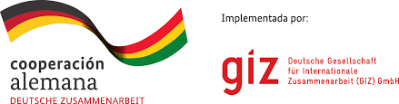
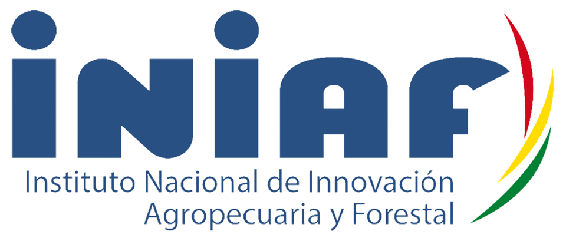
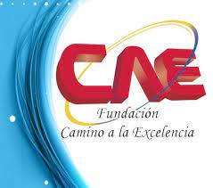
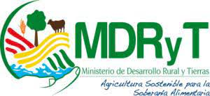
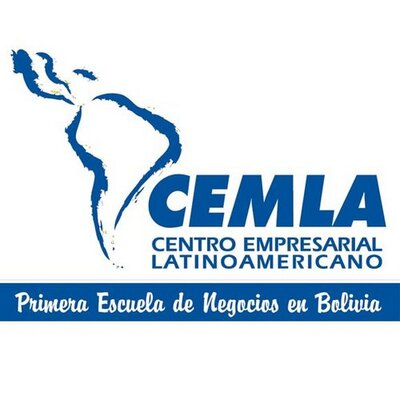
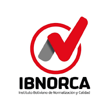
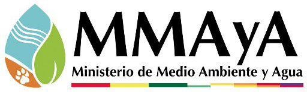

| LOGOTIPO | EMPRESA / INSTITUCIÓN | DESCRIPCIÓN | LUGAR | CARGO | PERIODO DE TRABAJO (Desde, Hasta)
| |
|---|---|---|---|---|---|---|
| Gobierno Autonomo Departamental de Cochabamba |
|
Cochabamba - Bolivia | Técnico Unidad de Gestión de Riesgos | 03/10/2011 | 06/05/2012 | |
| Gobierno Autonomo Departamental de Cochabamba |
|
Cochabamba - Bolivia | Técnico de Medio Ambiente | 07/05/2012 | 03/09/2013 | |
|  | PROAGRO GIZ |
|
Villamontes - Tarija - Bolivia | Consultor | 04/09/2013 | 04/10/2013 |
| PROAGRO GIZ |
|
Villamontes / Entre Rios - Tarija - Bolivia | Consultor | 01/03/2014 | 20/04/2014 | |
| Gobierno Autonomo Departamental de Cochabamba |
|
Chuquisaca - Bolivia | Técnico SIG y Medio Ambiente | 01/05/2014 | 31/12/2014 | |
| Servicios de Ingeniería Multidisciplinaria |
|
Cochabamba - Bolivia | Consultor en riego | 15/01/2015 | 02/09/2015 | |
|  | Instituto Nacional de Investigación Agropecuaria y Forestal |
|
Sipe Sipe - Cochabamba - Bolivia | Técnico en sistematización de Información y Manejo de Paquetes Estadisticos | 03/09/2015 | 02/09/2016 |
| Empresa Nacional de Electricidad Coorporación |
|
Abapó - Santa Cruz - Bolivia | Profesional en gestión Social SIG y Medio Ambiente | 03/10/2016 | 31/12/2016 | |
| Empresa Nacional de Electricidad filiar Guaracachi |
|
Santa Cruz de la Sierra - Santa Cruz - Bolivia | Asistente Técnico Socioambiental | 02/02/2017 | 03/07/2017 | |
| Empresa Nacional de Electricidad filiar Guaracachi |
|
Santa Cruz / Cochabamba / La Paz - Bolivia | Consultor | 01/02/2018 | 30/06/2018 | |
| Empresa Nacional de Electricidad filiar Guaracachi |
|
Bolivia | Consultor | 01/02/2018 | 30/06/2018 | |

Institución:Universidad Mayor de San Simón Título:Ingeniero Agrónomo (Carrera) Estado:Finalizado Fecha de obtención del título:8/06/2011 |
Institución:Centro Andino Para la Gestión y Uso del Agua Universidad Mayor de San Simón Título:Magister en Gestión Integral de Recursos Hídricos (Maestría) Estado:Finalizado Fecha de obtención del título:27/02/2020 |

Institución:Universidad Juan Misael Saracho Título:Diplomado en Gestión Ambiental (Especialidad) Estado:Finalizado Fecha de obtención del título:04/03/2013 |
Institución:Centro de Levantamiento Aeroespacial y Aplicaciones SIG para el Desarrolle Sostenible de los Recursos Naturales Universidad Mayor de San Simón Título:Diplomado en Sistemas de Información Geográfica (Especialidad) Estado:Finalizado Fecha de obtención del título:21/08/2013 |
Institución:Argentina Programa Título:Full Stack Jr. Developer (Especialidad) Estado:En curso Fecha de obtención del título: |
| LOGOTIPO | INSTITUCIÓN | TEMA | DURACIÓN (horas) |
FECHA DE CERTIFICADO |
|---|---|---|---|---|
|  |
Fundación Camino a la Excelencia |
Sistemas de Información Geográfica utilizando ArcGis |
30 |
22/11/2011 |
|
Fundación Camino a la Excelencia |
Procesamiento de Imagenes Satelitales |
27 |
23/11/2011 |
|
|  |
Ministerio de Desarrollo Rural y Tierras |
Manejo de Información Georeferenciada Sectorial |
16 |
20/04/2012 |
|  |
Centro Empresarial Latinoamericano |
Legislación Ambiental y Gestión Integral de Residuos Sólidos |
48 |
20/06/2012 |
|
Centro Empresarial Latinoamericano |
Implementación de Sistemas de Gestión y Auditor |
24 |
26/06/2012 |
|
|
Centro Empresarial Latinoamericano |
Gestión de Riesgos Ambientales |
47 |
03/08/2012 |
|
|
Centro Empresarial Latinoamericano |
Evaluación de Impactos Ambientales en proyectos |
27 |
25/08/2012 |
|
|
Centro Empresarial Latinoamericano |
Desarrollo Sostenible y Biodiversidad |
19 |
21/09/2012 |
|
|  |
Instituto Boliviano de Normalización y Calidad |
Fundamentos de Sistema de Gestión de la Seguridad y Salud Ocupacional NB/OHSAS 18001:2008 |
20 |
25/01/2013 |
|
Instituto Boliviano de Normalización y Calidad |
Requisitos del Sistema de Gestión de la Seguridad y Salud Ocupacional |
20 |
08/02/2013 |
|
|
Instituto Boliviano de Normalización y Calidad |
Auditorias Internas del Sistema de la Seguridad y Salud Ocupacional |
20 |
12/04/2013 |
|
|  |
Escuela Nacional de Riego Ministerio de Medio Ambiente y Agua |
Diseño de Sistemas y Formulación de Proyectos de Riego |
16 |
25/10/2013 |
|
Escuela Nacional de Riego Ministerio de Medio Ambiente y Agua |
Proyectos de Riego y Asistencia Técnica Integral |
16 |
15/11/2013 |
|
|
Centro Empresarial Latinoamericano |
Hidrología Aplicada |
22 |
14/05/2014 |
|
|
Centro Empresarial Latinoamericano |
Presas y Embalses |
22 |
04/10/2014 |
|
|
Centro Empresarial Latinoamericano |
Proyectos de riego |
22 |
06/10/2014 |
|
|
Escuela Nacional de Riego Ministerio de Medio Ambiente y Agua |
Sistemas de Información Geográfica en Proyectos de Riego I |
16 |
24/03/2015 |
|
|
Escuela Nacional de Riego Ministerio de Medio Ambiente y Agua |
Sistemas de Información Geográfica en Proyectos de Riego II |
16 |
21/07/2015 |
|
|
Escuela Nacional de Riego Ministerio de Medio Ambiente y Agua |
Curso de riego y fertilización de cultivos hortícolas |
40 |
13/11/2015 |
|
|
Centro Académico Didáctico del Ingeniero Civil |
QGIS y R para el manejo de información Geográfica |
18 |
20/06/2021 |
|
|
Instituo Geográfico Nacional |
Sistemas de Información Geográfica Software QGIS GRASS Nivel III- Modalidad Virtual |
23 |
07/12/2021 |
This is the second item's accordion body. It is hidden by default, until the collapse plugin adds the appropriate classes that we use to style each element. These classes control the overall appearance, as well as the showing and hiding via CSS transitions. You can modify any of this with custom CSS or overriding our default variables. It's also worth noting that just about any HTML can go within the
.accordion-body, though the transition does limit overflow.
This is the second item's accordion body. It is hidden by default, until the collapse plugin adds the appropriate classes that we use to style each element. These classes control the overall appearance, as well as the showing and hiding via CSS transitions. You can modify any of this with custom CSS or overriding our default variables. It's also worth noting that just about any HTML can go within the
.accordion-body, though the transition does limit overflow.